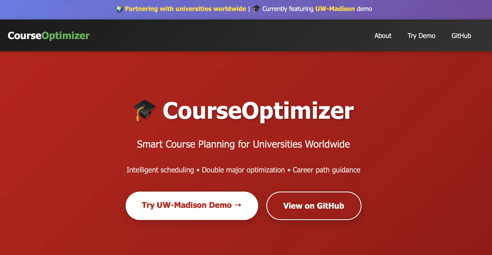

Three projects that show how I move from a hard question to a working, testable system.
01 / Research intelligence
A sensor system that can diagnose—and repair—itself.
I developed a residual-based framework for a heavy-duty engine virtual
sensor that identifies ten classes of sensor faults, estimates severity, and reconstructs the
damaged signal instead of simply raising an alarm.
Turning sign language into speech, frame by frame.
As team lead, I guided four engineers through the design and integration
of a browser-based ASL-to-speech pipeline—from landmark tracking and temporal recognition to
language refinement and spoken output.
02Recognition matters when it improves human action.03
03 / Spatial HCI research
Making physical space legible without relying on sight.
At MadAbility Lab, I explored how depth sensing, semantic segmentation,
and spatial feedback can help low-vision users understand stairs and obstacles in real-world
environments.
DEPTH MAP 03Environmental point cloudStair boundary detected
1.8mPATH CLEAR
Project archive
Summer 2026 · Team Lead
SignBridge (SAIL · ASL-to-Speech System)
Led a four-member team building SignBridge, a web-based ASL-to-speech system that
tracks 543 hand, face, and pose landmarks per frame across a 2,044-sign-class
recognition pipeline, from live signing to spoken language.
PythonTransformersMediaPipeGemini 2.5Text-to-SpeechReal-Time Systems
SignBridge tracks a signer through a temporal landmark pipeline, classifies the
sign sequence with a Transformer-based recognition model, refines the output into
natural language with Gemini 2.5, and speaks the result back — all inside a
single low-latency web application.
Key Features & Contributions
Real-time tracking of 543 hand, face, and pose landmarks per frame
across a 2,044-sign-class recognition pipeline.
Integrated temporal tracking, Transformer-based recognition, Gemini
2.5 language refinement, and text-to-speech into one pipeline.
Achieved 11.59 ms average local processing latency toward a 30 FPS
real-time target.
Led a four-member team through system design, delegation, and
end-to-end integration.
Developed a residual-based framework that diagnoses and self-corrects sensor faults,
integrating fault injection, 10-class sensor fault diagnosis, severity estimation, and
signal correction — winner of the ASME Undergraduate Engineering Student
Competition.
Builds on a multi-target virtual sensor for a 12-L heavy-duty diesel engine by
injecting artificial sensor faults, classifying fault type, estimating fault
severity, and correcting the corrupted signal — establishing a foundation for
virtual sensor-guided sensor health monitoring.
Key Features & Contributions
Injected controlled sensor faults (noise, bias, drift, and more) into
virtual-sensor inputs to study fault propagation.
Trained a 10-class XGBoost fault-diagnosis classifier, reaching 98.74%
classification accuracy and 98.56% macro F1.
Built severity estimation and signal-correction stages that reduced
error by over 90% in representative bias and drift correction cases.
Presented the framework at the ASME Undergraduate Engineering Student
Competition with faculty advisor Saurabh K. Gupta.
Designed and developed a multi-target virtual sensing framework using a single artificial neural network (ANN) to replace multiple expensive physical sensors in a 12L 6-cylinder diesel engine.
Built using a shared-representation deep learning architecture, the model learns latent representations to simultaneously predict heterogeneous, non-linear thermodynamic parameters (MF_IA, NOx_EO, SOC) in real time. The framework achieved high test accuracy (R² > 0.98 for all targets) across 217 engine operating points.
Key Features & Contributions
Engineered multi-output ANN architectures (ANN-6 and ANN-13) in PyTorch for non-linear thermodynamic engine states.
Preprocessed and analyzed real-world high-fidelity experimental data across full engine load and speed ranges.
Achieved predictive R² scores of 0.9945 for intake air mass flow, 0.9891 for NOx emissions, and 0.9841 for start of combustion.
Validated model generalization using stratified splits against Linear Regression, Random Forest, and SVR baselines.
Multi-target Virtual Sensor ANN ArchitectureSystem Diagnostics & Robustness RoadmapPoster Presentation at UW-Madison Undergraduate Research Symposium
Designed a spatial computing solution for industrial manufacturing environments during a one-day interdisciplinary startup ideathon, preserving equipment maintenance knowledge and reducing downtime.
Collaborated with a multidisciplinary team to commercialize Spatial Grounding and Awareness for Augmented Reality (SGA-AR) in industrial spaces, enabling spatial anchoring of machinery documentation directly onto physical assets.
Key Features & Contributions
Formulated product strategy and technical architecture for shared AR spaces in manufacturing environments.
Conducted rapid customer discovery and developed sustainable B2B SaaS business models.
Led pitch deck creation and high-fidelity product dashboard demonstrations.
Designed spatial anchoring logic to ground equipment documentation to physical machinery.
Industrial Asset Intelligence System ArchitectureUW Tech Exploration Lab Team Collaboration
Apr 2026 – Sep 2026 · Researcher
AR/VR Accessibility & Spatial HCI
Research project focusing on accessibility in immersive environments, utilizing depth-sensing cameras and spatial computing to assist low-vision users with real-world navigation.
Developed spatial intelligence prototypes that capture 3D environments and translate them into multi-modal cues (audio, haptics) for users. Investigated spatial layout grounding algorithms and user-testing protocols to ensure interfaces degrade gracefully under vision impairments.
Key Features & Contributions
Leveraged Intel RealSense D455 depth data to map physical obstacles and estimate distances in real time.
Formulated 3D spatial audio feedback models to communicate navigation markers and hazard warnings.
Integrated gesture-based control paths to simplify VR interface navigation for accessibility.
Real-time Obstacle & Stair DetectionSpatial Point Cloud Environmental Mapping
Built a closed-loop image editor that replaces the background behind a person or dog while keeping the subject intact: every candidate is scored by a bank of critics, diagnosed, and re-edited.
PythonPyTorchHugging Face DiffusersGenerative AIComputer Vision
Built in PyTorch, the system utilizes latent representations and cross-attention maps to identify target editing regions. By integrating a multi-stage feedback loop, users can progressively refine generated images through natural language prompts, resolving typical drift issues in single-step generation.
Key Features & Contributions
Implemented local cross-attention control to isolate edits without affecting background pixels.
Formulated a closed-loop feedback pipeline that scores and refines image details iteratively.
Optimized diffusion step sequencing, reducing inference times for image-to-image tasks.
CheeseHacks 2026 · Lead Developer
MediMenu (AI Meal Planner)
Designed and built an AI-assisted meal planner and personalization engine during the CheeseHacks 2026 hackathon, leading a 4-person development team.
ReactFastAPIGPT-4oPythonREST APIsUI/UX Design
Integrated large language models (LLMs) with dietary databases to deliver customized nutritional recommendations based on user health parameters. Built backend using FastAPI and structured responsive frontend in React, creating an interactive portal that auto-generates grocery lists and meal plans.
Key Features & Contributions
Integrated GPT-4o API for personalized, context-aware recipe recommendations.
Developed a FastAPI backend with asynchronous query handling for rapid response times.
Constructed a React-based frontend dashboard with visual recipe cards and nutritional breakdowns.
MediMenu AI Meal Personalization & Recipe Portal

Badger Build Festival
CourseOptimizer (Schedule Optimization Tool)
Built an interactive schedule optimization application at the Badger Build Festival to help university students build conflict-free course schedules.
Developed a search and filter system that runs constraint-satisfaction logic client-side in JavaScript. The tool parses course timings, prerequisites, and workload metrics, presenting students with a visual calendar dashboard and alternative schedule configurations.
Key Features & Contributions
Built a client-side constraint solver to filter schedules based on user availability and load limits.
Designed an interactive grid calendar showing overlapping slots and walking times between classes.
Created a clean, responsive HTML/CSS dashboard with smooth drag-and-drop course selections.
Conducted a statistical and machine learning study analyzing socioeconomic factors and their correlations with human survival outcomes across ten large-scale datasets.
Performed rigorous data cleaning, missing value imputation, and exploratory data analysis using Pandas and Seaborn. Trained and evaluated multiple classification models, including Artificial Neural Networks (ANNs) and logistic baselines, comparing performance using area-under-the-curve (AUC) and receiver-operating-characteristic (ROC) metrics.
Key Features & Contributions
Processed and merged ten heterogeneous datasets, handling class imbalances and multi-collinearity.
Trained and optimized multi-layer ANN classifiers in Python.
Produced publication-ready statistical visualizations of feature importances and correlation matrices.